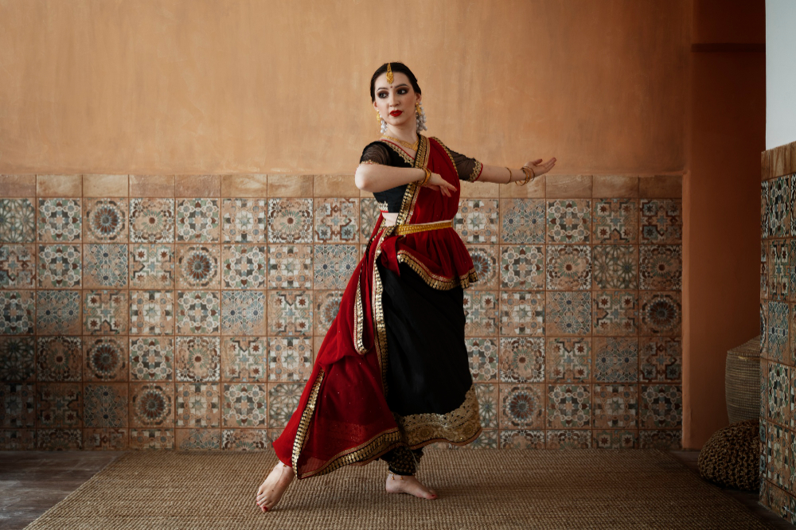

Indian dance is significant as it serves as a vital medium for preserving cultural heritage, expressing spirituality, conveying stories through mythology and providing a platform for artistic expression, deeply rooted in the country's religious practices and social fabric, with various classical dance forms like Bharatanatyam and Kathak acting as custodians of ancient tales and traditions.
Indian dance acts as a key carrier of customs, stories, and rituals passed down through generations, showcasing the rich tapestry of Indian culture through movements and gestures;.
Know more